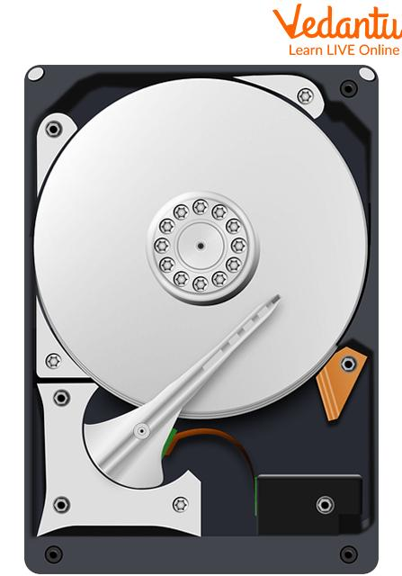
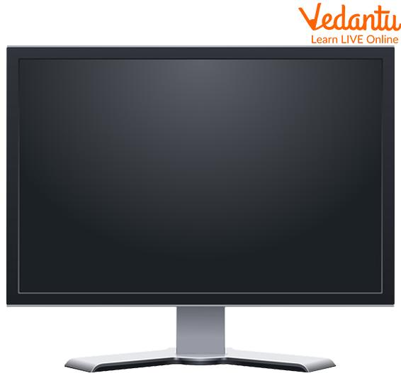

Parts of a Computer
Processing Unit (CPU)
The Central Processing Unit (CPU), often called the "brain" of the computer, executes instructions and performs calculations.

Memory (RAM)
Random Access Memory (RAM) stores temporary data for quick CPU access. Its capacity and speed significantly impact system performance.

Storage Devices
Storage devices, like Hard Disk Drives (HDDs) and Solid State Drives (SSDs), provide long-term data storage.

Input Devices
Input devices allow users to interact with the computer. Examples include keyboards, mice, and touchpads.
Output Devices
Output devices display or produce results. Monitors display visuals, while speakers and printers provide audio and print output.

Power Supply Unit (PSU)
The Power Supply Unit (PSU) converts electrical power from an outlet into usable power for the computer components.
